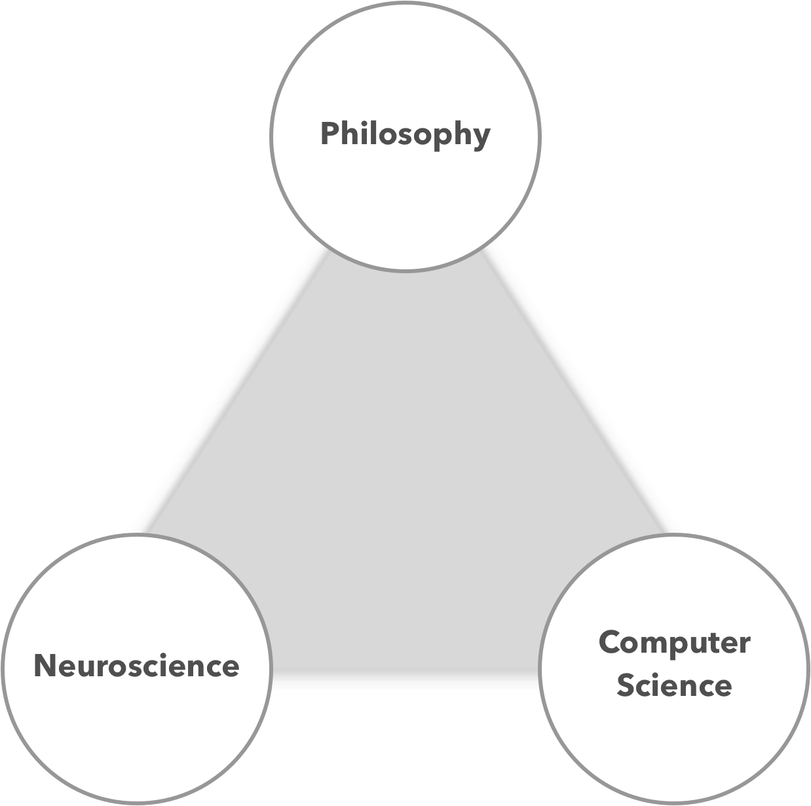

We are a group of interdisciplinary researchers from Duke University
who are fascinated by the social and ethical implications of the quick
development of artificially intelligence systems. We are trying to understand
the role these new technologies will play in everyday life and how (or if) they
much adhere to the same moral principals as you and I.
click here for a more detailed manifesto
